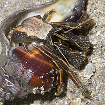
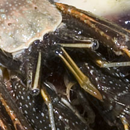
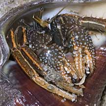

|
|
| hermit crabs text index | photo index |
| Phylum Arthropoda > Subphylum Crustacea > Class Malacostraca > Order Decapoda > Anomurans > hermit crabs > Clibanarius |
| Orange-striped
hermit crab Clibanarius infraspinatus* Family Diogenidae updated Dec 2019
Where seen? This large often colourful hermit crab is quite commonly seen on many of our shores, in sandy or silty areas and among seagrasses. Those seen on our Northern shores are usually larger. Elsewhere, it is found near river mouths on fine sand or sand-mud bottoms in mangrove areas. Features: Body about 3-5cm long, upper side pale near the eyes, towards the 'tail' with broad dark brown and pale orange stripes. Body sides dark with white dots. Both pincers are more or less equal in size and held so that the 'fingers' open horizontally in front of the animal. Pincers sparsely hairy, no stripes, brown with paler pimples and orange claws. Walking legs sparely hairy, brown with orange stripes. Eye stalks brown with pale stripes. Short antennae pale orange to feathery tips. Long antennae pale or dark brown, not feathery. Juveniles without light colored stripes on eye stalks and walking legs. More on how to tell apart Clibanarius hermit crabs. |
|
 East Coast Park, May 11 |
 |
 East Coast Park, May 11 |
*Species are difficult to positively identify without close examination.
On this website, they are grouped by external features for convenience of display.
| Orange-striped hermit crabs on Singapore shores |
On wildsingapore
flickr
|
| Other sightings on Singapore shores |
|
Give me back my dollar! from Loh Kok Sheng on Vimeo. |
 |
| Acknowledgements With grateful thanks to liwaliw for identifying this hermit crab on wildsingapore flickr. Links
|